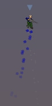
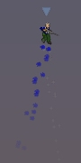

Aby zarejestrowac Soldat teraz udaj sie tutaj.
Aby zobaczyc korzysci plynace z rejestracji przeczytaj to co jest ponizej.
Co dostaniesz z rejestracji Soldat?
W Soldat mozna grac za darmo, jednak powinienes pomyslec o rejestracji
jesli grasz juz jakis czas.
Rejestracja to dobry uczynek, powoduje ze gra bedzie dluzej zyla, poniewaz
autor jest bardziej zmotywowany do pracy i ma wiecej funduszy na rozwoj.
Koszt rejestracji wynosi 25zl. Wiec pomysl o tym jesli
lubisz Soldat.
Oprocz poczucia, ze robisz dobrze i przynaleznosci do ogromnej rzeszy
zarejestrowanych zwolennikow Soldat, dostajesz jeszcze inne rzeczy:
WLASNE PROFILE

Daja mozliwosc zachowywania roznych ustawien w
nieskonczenie wielu profilach uzytkownika.
Rozne profile daja ci szybki dostep do predefiniowanych ustawien: gry,
serwera, gracza i wygladu.
Powyzszy screenshot pokazuje przyklad uzycia.
WLASNE INTERFEJSY

Zmien
wyglad, pozycje i zachowanie interfejsu gracza podczas gry.
Jesli znudzil ci sie standardowy interfejs mozesz go latwo zmienic.
Aktualnie dostepne sa nastepujace interfejsy:
Jesli to za malo mozesz w przyszlosci sciagnac interfejsy tworzone przez fanow
lub stworzyc wlasny dzieki
Soldat
Interface Maker.
|
|
|
|
|
|
|
|
|
|
|
|
MP3 PLAYER

Sluchaj swojej muzyki MP3 podczas gry dzieki MP3
playerowi.
Wystarczy ze skopiujesz playlisty 'm3u' do folderu Soldat 'mp3' i
mozesz grac wlasne utwory podczas gry. Playlisty mozna stworzyc w
kazdym programie do mp3 (np. Winamp lub Foobar).

Latwy dostep do odtwarzania dzieki klawiszom F5 - stop/play i F6 - nastepna sciezka.
NIEOGRANICZONY CZAS NAGRYWANIA DEMA
Niezarejestrowana wersja Soldat pozwala na nagrywanie dema (klawisz F8) tylko przez 3 minuty. Pelna wersja pozwala nagrywac bez ograniczen, dzieki temu mozesz zachowywac wszystkie swoje walki i robic filmy!
ZMIANA ROZDZIELCZOSCI
Niezarejestrowani gracze moga tylko grac w rozdzielczosci ekranu 640x480. Po rejestracji mozesz zmienic rozdzielczosc na 800x600, 1024x769, 1280x1025, 1600x1200! Wieksza rozdzielczosc oznacza wiecej miejsca na to co wazne czyli gra! Teksty, interfejs i logi zostaja znacznie zmniejszone. Sprawdz samemu jak to wyglada klikajac na obrazki:


ZADNYCH OKIENEK REJESTRACYJNYCH
Po zarejestrowaniu nie bedziesz mial zadnych zbednych okienek na poczatku gry i tekstow wewnatrz.
ZOSTAN HONOROWYM CZLONKIEM SPOLECZNOSCI SOLDAT
Jak tylko zarejestrujesz obok twojego imienia
bedzie widnial specjalny symbol (jasna gwiazdka) za kazdym razem gdy bedziesz
gral w Soldat. Dzieki temu staniesz sie honorowym czlonkiem spolecznosci i
wszyscy beda o tym wiedzieli.
Dzieki gwiazdce wszyscy beda cie rozpoznawac. Zaden niezarejestrowany noob nie bedzie sie pod ciebie podszywal!


KOLOROWE PLOMIENE
Tylko zarejestrowani gracze maja mozliwosc zmieniania koloru plomieni z butow. Jesli nie chcesz miec caly czas tego samego zoltego koloru zarejestruj Soldat i bedziesz mial swoj unikatowy kolor. Dzieki temu nikt cie nie pomyli, gdyz tylko zarejestrowani gracze maja ta mozliwosc.

 

ZMIEN INTERFEJS
Z Soldat Interface Maker mozesz latwo zmienic istniejacy interfejs i dostosowac go do swoich potrzeb.
STWORZ WLASNY INTERFEJS
Mozesz narysowac wlasny interfejs! Z Soldat
Interface Maker mozesz stworzyc najwygodniejszy i najladniejszy
interfejs.
Mozesz tez tworzyc rozne interfejsy, ktore zmieniaja tylko kursor. W
ten sposob mozesz latwo w grze zmieniac wyglad kursora.
ZNIZKA DLA KLANOW
Istnieje mozliwosc znizki dla klanow i wiecej niz 3 rejestracji na raz. Co trzecia rejestracja jest darmowa. Wiec jesli zaplacisz za 2 kopie dostaniesz jedna za darmo, za 4 dostaniesz jeszcze dwie darmowe. Aby tak zrobic prosze zaplacic normalnie za rejestracje np. 3 za 75zl, wtedy otrzymasz 4 rejestracje za darmo. Prosze wyslac mi maila z imionami lub ksywkami osob przed lub po dokonaniu wplaty.
Mozna zarejestrowac na 2 sposoby:
|
przez SHARE-IT Mozna placic w zlotowkach. Rejestrujac w Share-it otrzymasz kod natychmiast po zaplacie! Kliknij tutaj aby udac sie do strony
rejestrujacej Soldat przez Share-It:
|
|
REJESTRACJA PROMOCYJNA! Alternatywna opcja rejestracji przez zwykla wplate
na konto bankowe (mozna to zrobic na poczcie lub w kazdym banku). Z
powodu obnizenia kosztow obslugi rejestracja ta metoda kosztuje 25zl.
|
Po rejestracji otrzymasz specjalny kod i program do rejestracji, bedziesz mogl sie cieszyc zarejestrowana
wersja Soldat.
Rejestracja jest dozywotnia (na wszystkie wersje w przyszlosci).
Wysle kod w kilka godzin po tym jak otrzymasz
potwierdzenie od banku (w Share-it nastepuje to natychmiast).
Jesli potrwa to dluzej (wiecej niz 48 godzin) prosze sie ze mna
skontaktowac osobiscie (michal.marcinkowski<AT>gmail.com).
Dziekuje i baw sie dobrze!